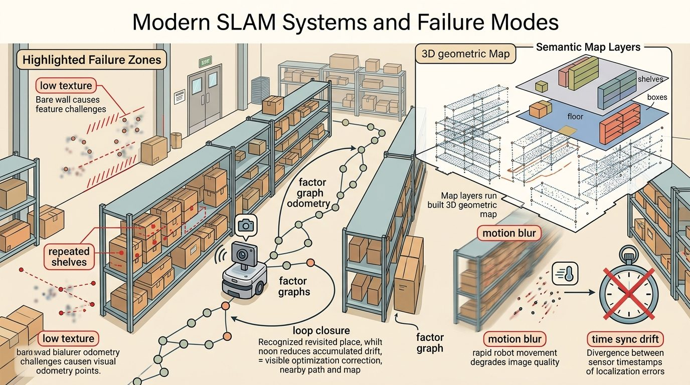
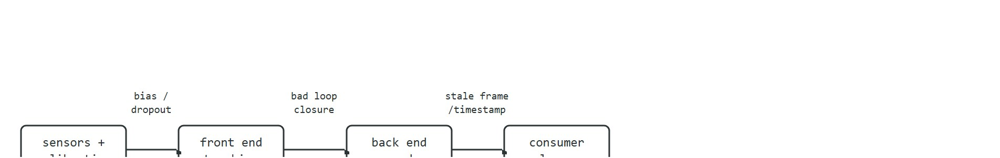
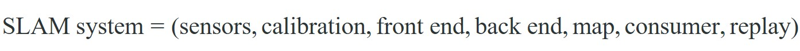

"A map is a promise that every future footstep will ask you to keep."
A Loop Closure That Came Back With Receipts

This section assumes familiarity with odometry (section 29.2), the visual-inertial front end and loop closure mechanics (section 29.5), and map uncertainty representation (section 29.7). The system-level diagnostic framing developed here carries directly into Chapter 30, where localization health signals become preconditions for the planner and recovery behaviors.
A delivery robot navigating a hospital corridor loses its visual front end in a reflective glass lobby, drifts two meters, and confidently reports a clean localization score. The planner has no idea anything is wrong. Forty seconds later the robot blocks a gurney. This is the canonical SLAM failure: not a spectacular crash but a silent, self-certified divergence. As embodied AI systems graduate from controlled labs to populated, perceptually hostile environments, the gap between "SLAM runs" and "SLAM can be trusted" has become the central engineering problem. This section dissects how modern systems are structured as a contract among sensors, front end, back end, and consumers, catalogs the failure modes at each interface, and builds a diagnostic checklist applicable to any live deployment.
Ship a SLAM system and you will discover it was never one algorithm but a treaty. It binds sensors, calibration, front-end tracking, back-end optimization, map storage, localization consumers, and replay tools into one contract. Field failures cluster wherever two signatories disagree about what they promised each other. (SLAM, Simultaneous Localization and Mapping, is the problem of building a map of an unknown environment while tracking the robot's pose within it.)
Figure 29.8.1 captures this stance: the visual idea is only useful once it is tied to a state variable, an uncertainty model, and the next robot action. Figure 29.8.2 below makes that same interface-first claim concrete by walking the pipeline from sensors to consumer and marking where each failure mode actually appears. The systems view matters because field failures often arise at interfaces. A visual-inertial front end tracks well but publishes stale transforms. A loop closure looks geometrically plausible but is semantically wrong. Or the map is correct but too old for the current route. In practice, interface failures outnumber algorithm failures by roughly four to one in field deployments (based on practitioner surveys and incident reports through 2024): the estimator is fine, but the consumer receives a transform in the wrong frame or with a timestamp 200 ms stale. A representative anecdote from this pattern: one team reported that six months of tuning the estimator fixed far fewer production incidents than a single follow-up week spent auditing timestamp propagation, an illustrative case rather than a controlled comparison, but consistent with the interface-failure ratio above.
So far: a SLAM deployment is a contract among sensors, front end, back end, map, and consumer, and most field failures happen at the interfaces between these components (mismatched frames, stale timestamps, semantically wrong loop closures) rather than inside any single algorithm.

A localization or mapping result is incomplete until it names the frame, timestamp, covariance or confidence, map layer, and downstream consumer. A beautiful trajectory plot with no uncertainty is not a robot interface; it is a picture.
Why this matters physically. A robot's planner and controller execute irreversible actions in the world: a wheel turn cannot be un-turned, a door opened cannot be instantly re-closed. If the pose estimate arrives with no covariance, the planner has no basis for inflating safety margins near obstacles. If the timestamp is missing, a 200 ms stale estimate can place the robot's collision footprint 0.1 m behind its true location at typical corridor speeds, enough to clip a doorframe or a pedestrian.
How the contract is enforced. Each field serves a specific downstream check: the frame identifier prevents the planner from mixing map-frame and odom-frame poses; the timestamp lets the controller reject estimates older than one control cycle; the covariance diagonal drives replanning thresholds; the map layer tag tells the recovery behavior which representation is authoritative when two maps disagree.
Once the contract names what each interface must carry, the estimator at the center of that contract has a precise mathematical shape worth stating.
The common estimator shape is a posterior over robot trajectory and map variables conditioned on controls and observations:

The notation matters less than what it asserts: motion increments, landmark observations, scan matches, visual features, and loop closures are all evidence terms. The estimate is trustworthy only when each term carries a residual, a covariance model, and a replayable source record.
Before reading on: if a SLAM system reports high internal confidence while the robot drifts two meters, which component do you fix first, the estimator or the sensor front end?
A SLAM system that cannot name its own failure mode is not a navigator; it is a confident guesser.
Code Fragment 1 grounds the argument in a small numeric check. It is intentionally small, because the first debugging question is whether the estimate behaves correctly before it is hidden inside a large ROS graph or optimizer.
# Classify a SLAM failure from health signals.
# The labels separate front-end tracking from back-end graph trouble.
feature_count = 38
loop_residual_m = 2.4
optimization_ms = 180
if feature_count < 50:
label = "front_end_tracking_risk"
elif loop_residual_m > 1.0:
label = "loop_closure_outlier_risk"
elif optimization_ms > 100:
label = "back_end_latency_risk"
else:
label = "nominal"
print(label)Expected output interpretation. This label means the earliest failing signal is perceptual tracking, not graph optimization or runtime latency. The operational consequence is that recovery should first target feature quality, sensor exposure, or motion aggressiveness, rather than jumping directly to back-end tuning.
Trace the Code Fragment 1 classifier across three consecutive health snapshots from a robot entering a glass lobby. The thresholds are feature_count below 50, loop_residual_m above 1.0, and optimization_ms above 100, checked in that order.
Frame A (corridor, healthy): feature_count = 92, loop_residual_m = 0.3, optimization_ms = 64. First test: 92 < 50 is false. Second test: 0.3 > 1.0 is false. Third test: 64 > 100 is false. Result: nominal.
Frame B (approaching reflective glass): feature_count = 41, loop_residual_m = 0.5, optimization_ms = 70. First test: 41 < 50 is true, so evaluation short-circuits here. Result: front_end_tracking_risk. Note that the loop residual is still benign, so a naive "check loop closure first" reflex would have missed the real cause.
Frame C (a hallucinated match fires): feature_count = 58, loop_residual_m = 2.4, optimization_ms = 70. First test: 58 < 50 is false. Second test: 2.4 > 1.0 is true. Result: loop_closure_outlier_risk. The feature count recovered, but the front end registered a geometrically plausible yet wrong correspondence against a mirrored reflection, exactly the silent-divergence pattern the section warns about. The 2.4 m residual is the only on-board signal that betrays it.
The hand-written classifier above isolates the invariant; the next step is to scale that same diagnostic instinct onto the production frameworks that teams actually deploy.
ORB-SLAM3, RTAB-Map, OpenVINS, Kimera, Cartographer-style pipelines, GTSAM, Ceres, and Nav2 cover different parts of the system. A serious build chooses tools by sensor suite, map type, latency budget, license, deployment platform, and replay needs.
When using RTAB-Map, set RGBD/LinearUpdate and RGBD/AngularUpdate to match your platform's actual motion increments before the first full mapping run. The defaults (0.1 m and 0.1 rad) create keyframes far too frequently on a slow-moving indoor robot, flooding the back-end graph optimizer with near-duplicate nodes and pushing optimization_ms past the 100 ms threshold before any real trajectory complexity appears. A practical starting point for a 0.3 m/s wheeled robot is 0.3 m linear and 0.3 rad angular; verify by checking that the keyframe count per meter of travel drops below five before tuning anything else.
Use the hand calculation as the unit test and the library stack as the maintained implementation. The right workflow is not from-scratch forever; it is from-scratch until the invariants are visible, then production tools for scale, logging, visualization, and integration.
Replay a bag with the interface, not the algorithm, as the injected fault: hold the front end healthy but delay its timestamp by 200 ms before it reaches the consumer, or feed a geometrically plausible but semantically wrong loop closure into an otherwise sound back end. If the resulting failure label still says "estimator problem" instead of naming the specific interface that dropped the contract, the system is not yet debug-ready.
A common assumption is that a low internal SLAM score or a smooth trajectory plot means the robot is correctly localized. That assumption is wrong. A SLAM estimator measures self-consistency, not ground truth. It can report high confidence while the pose drifts by meters. In perceptually hostile environments (glass lobbies, featureless corridors, dynamic crowds) the front end produces geometrically consistent but physically wrong correspondences. Factor graph residuals stay near nominal (a factor graph is the graphical model, nodes for poses and landmarks, edges for measurement constraints, that the back end optimizes to produce the pose estimate). The drift is silent. Trust a SLAM output only when the full action contract is satisfied: frame, timestamp, covariance, map layer, and downstream consumer check. The system must also be stress-tested against the specific failure modes of its deployment environment.
Think of a chef who tastes only their own sauce at every step: each addition seems consistent with the last, so the internal quality score stays high, but if the very first batch was over-salted, every subsequent "consistent" adjustment drifts further from a dish anyone else would call good. A SLAM estimator is that chef. It measures whether new measurements agree with its running belief, not whether the belief matches the real world. Just as the chef needs an outside taster with a fresh palate to catch accumulated salt drift, a SLAM system needs an external ground-truth check (a fiducial marker, that is, a printed pattern such as an AprilTag whose position is known in advance and can be detected independently of the SLAM estimate, a known landmark, or a GPS fix) to catch accumulated pose drift before confidence scores alone can be trusted.
The replay artifact this system view depends on (odometry, IMU packets, scan tracks, pose, covariance, map layer, planner cost, recovery behavior) is specified once in Section 29.6's Practical Example. This section's addition is the interface labeling: tag each replayed field with which of the four contract signatories (sensors, front end, back end, consumer) produced and consumed it, so a silent divergence can be traced to one arrow in Figure 29.8.2 rather than one box.
Amazon Robotics fulfillment centers run thousands of drive units that localize against floor fiducials precisely because pure visual-inertial SLAM cannot be trusted to self-certify in a repetitive, dynamically crowded warehouse. The fiducial grid is the external ground-truth check from this section's chef analogy: it caps accumulated drift before silent divergence can route a unit into a human or a shelf. The same pattern appears in Skydio drones, which fuse onboard VIO (Visual-Inertial Odometry, pose estimation from camera and IMU alone) with GPS fixes to bound the silent-drift failure mode whenever the visual front end degrades.
Foundation-model place recognition (2024-2025). Large vision-language models are being adapted as global descriptors for loop closure. AnyLoc (Keetha et al., IROS 2024) shows that DINOv2 features aggregated with VLAD generalize across indoor, outdoor, and underground environments without domain-specific retraining, outperforming NetVLAD and CosPlace by 15-30 percent on cross-environment recall benchmarks. The open risk is that VLM (Vision-Language Model) descriptors are sensitive to lighting and viewpoint changes in ways that are hard to predict from internal confidence scores, so a failure is again silent.
Gaussian-splatting map representations (2024-2025). 3D Gaussian Splatting has moved from novel-view synthesis into online SLAM: MonoGS (Matsuki et al., CVPR 2024) maintains a live Gaussian map on a single RGB camera and localizes by differentiably rendering and comparing frames, achieving sub-centimeter accuracy on TUM RGB-D sequences without depth sensing. The active challenge is handling dynamic objects, since a Gaussian splat encoding a moving person becomes a persistent localization outlier until the splat is explicitly pruned.
Uncertainty-aware neural odometry (2024-2026). The MIT SPARK Lab and Carnegie Mellon AirLab have published learned IMU and visual odometry modules (DPVO, NeuralSwarm) that output calibrated covariance, not just point estimates, enabling the factor graph to weight learned measurements against classical measurements. The open problem a PhD student could tackle: rigorous failure-mode taxonomy for hybrid classical-neural SLAM systems, specifically, a benchmark protocol that can distinguish whether a pose jump originates in the learned front end, the covariance miscalibration, or the graph optimizer, using only on-board sensor logs without access to ground truth at runtime.
A SLAM system that reports high confidence while drifting is a chef who only tastes their own sauce: perfectly consistent with the last batch, and still wrong, because consistency was never the same thing as correctness.
Can you state the state variables, observation residual, uncertainty representation, replay artifact, and most likely field failure for modern slam systems and failure modes? If one field is vague, the estimator is not ready for embodied use.
Modern SLAM systems and failure modes is production-ready only when geometry, uncertainty, timing, and action consequences are tested together.
Design a two-run interface-fault test for this section's four-component contract. One run should be nominal. The other should break exactly one interface (sensors-to-front-end, front-end-to-back-end, or back-end-to-consumer) rather than the algorithm inside a box. Report which interface you broke, the failure label the classifier produced, and whether that label correctly named the interface rather than the component.
Goal. Witness the central failure of this section first-hand: a SLAM system that reports high internal confidence while its pose estimate drifts meters from ground truth. You will produce a single plot where the internal score stays flat while the real error climbs.
Tools needed. Python 3, the TUM RGB-D benchmark (a public dataset of RGB-D camera sequences with millimeter-accurate ground-truth poses, widely used to score SLAM trajectory accuracy) (download one sequence, for example fr2/desk or the low-texture fr3/nostructure_texture_near_withloop), and a pip-installable monocular SLAM front end such as pyslam or ORB-SLAM3 with Python bindings. Allow about 20 to 30 minutes including the dataset download.
What to vary. Run the front end twice: once on a texture-rich sequence and once on a low-texture or reflective sequence. Optionally degrade the input yourself by blurring every Nth frame or masking the central image region to simulate feature dropout.
What to observe. For each frame, log three numbers: the tracked feature count, the SLAM system's internal tracking confidence, and the absolute trajectory error against the provided ground-truth poses. Plot all three on a shared time axis. On the healthy run the confidence and error stay correlated; on the degraded run you should see the diagnostic signature of this section: confidence remains high precisely while the error spikes. That gap is the silent divergence no internal score can catch, and it is why the action contract demands an external check.
Beginner (weekend): Build a SLAM health monitor in ROS2 that subscribes to a Nav2 localization topic and prints a failure label (front-end tracking risk, loop closure outlier risk, back-end latency risk, or nominal) whenever any threshold is breached. The key challenge is learning to inspect live ROS2 topic fields like covariance diagonal and timestamp age without modifying the SLAM node itself.
Intermediate (1-2 weeks): Use PyBullet to simulate a wheeled robot in a featureless corridor, inject one controlled perturbation per run (wheel slip, feature dropout, or stale timestamps), run RTAB-Map via ROS2, and log whether the failure label from Code Fragment 1 correctly identifies the perturbation source. The key challenge is closing the loop between the simulator's ground-truth pose and the RTAB-Map estimate so that silent divergence (high internal score, large real error) is visible in a single plot.
Intermediate-plus (2 weeks): Reproduce the glass-lobby failure mode in Isaac Lab by placing a robot in a reflective-wall environment, run ORB-SLAM3 via ROS2, and implement a fiducial-marker recovery behavior that fires when the internal confidence score stays high but the pose jumps more than 0.3 m between keyframes. The key challenge is distinguishing a genuine fast motion from a silent hallucinated match using only on-board signals, without access to ground truth at runtime.
Continue to Chapter 30: Navigation and Path Planning, where this state-estimation contract becomes the input to the next embodied capability.
Durrant-Whyte, H. and Bailey, T. "Simultaneous Localization and Mapping." IEEE Robotics and Automation Magazine, 2006. https://ieeexplore.ieee.org/document/1638022
Classic SLAM tutorial that frames the estimation problem and the role of uncertainty.
GTSAM Project. "Factor Graphs and GTSAM." Official documentation. https://gtsam.org/
Primary tool reference for factor graphs, smoothing, pose graphs, and robotics estimation examples.
ROS 2 Navigation Project. "Nav2 documentation." Official documentation. https://navigation.ros.org/
Primary documentation for integrating localization, maps, planners, controllers, behavior trees, and recoveries.